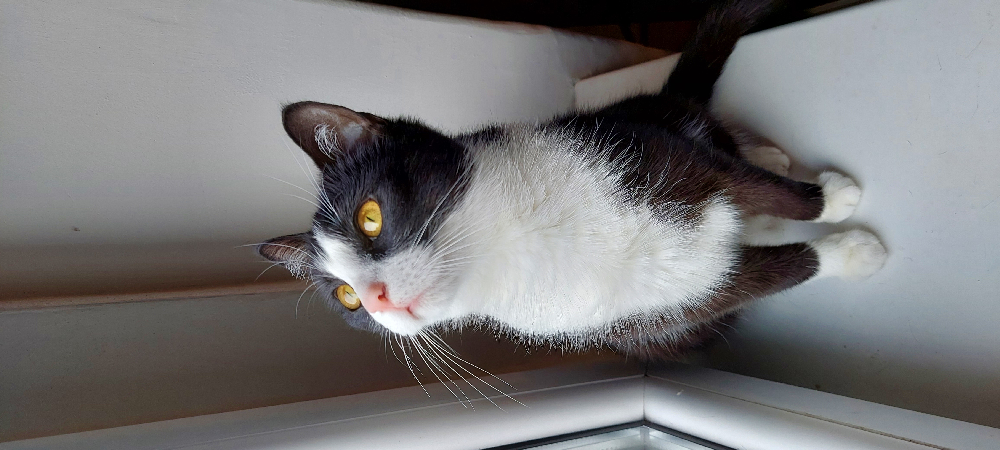
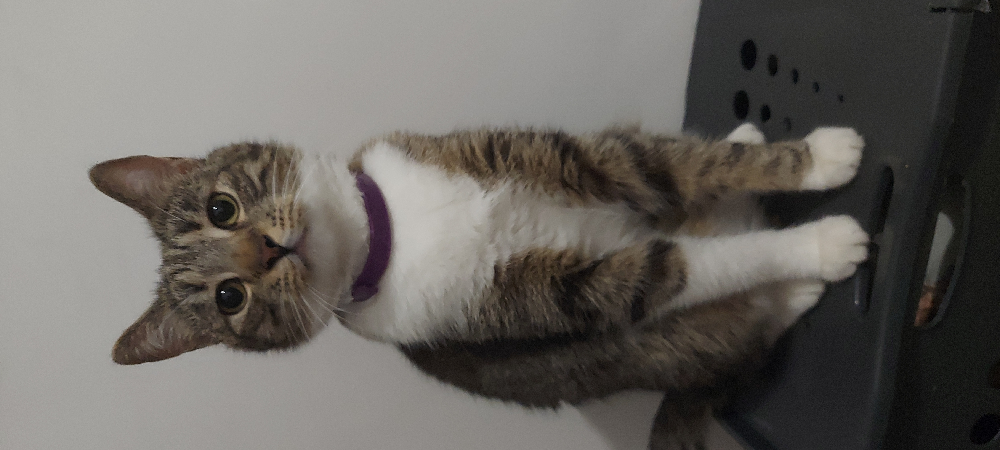

Monisia
Młodsza siostra Chandlera. Urodzona w sierpniu 2020 roku przeze mnie. Różowy nosek. Lubi pić wodę ze sniftera na piwo i spotykać się przez szybę z kotem sąsiadów, Tajsonem.
Chandlerek
Starszy braciszek Moniki. Urodzony w kwietniu 2020 roku, również przeze mnie. Brązowy nosek. Lubi aportować i nerwowo reaguje, na kota sąsiadów, Tajsona.


Please don't contact us.
Thank you